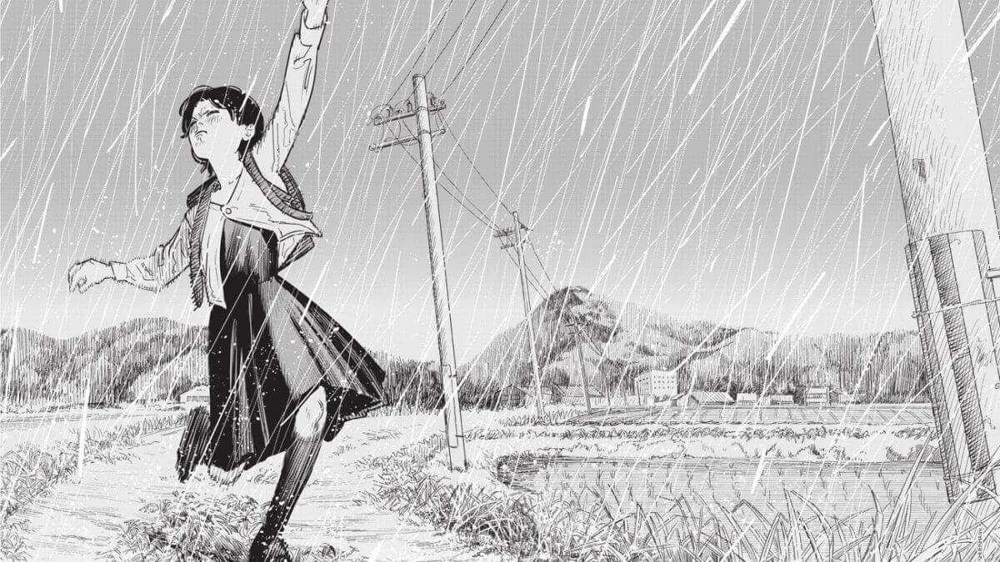

Look Back
Tatuski Fujimoto, 2021
Ce manga en one-shot raconte l'histoire de deux filles. L'une est la star de l'école, elle écrit des mangas drôles dans le journal des CE2, malheureusement ses dessins ne sont pas à la hauteur. L'autre a une phobie des autres, elle sort à peine de chez elle mais publie, fur-et-à distance, dans ce même journal, de très beaux décors. La première est jalouse de l'autre alors que celle-ci est admirative du travail et de l'humour de la première. Par un coup du destin, elles vont se rencontrer et apprendre à travailler ensemble.
C'était très prometteur, j'en attendais beaucoup de ce manga écrit par l'auteur de Chainsaw Man. Malheureusement, je n'ai absoluement rien compris à la fin. Les 20 dernières pages sont, pour moi, des plus obscures, j'étais totalement perdue. Je vais essayer de regarder le film issu de ce one-shot mais pour l'instant je suis pas du tout covnaincue, j'ai trouvé ça très brouillon.
Retour à l'accueil